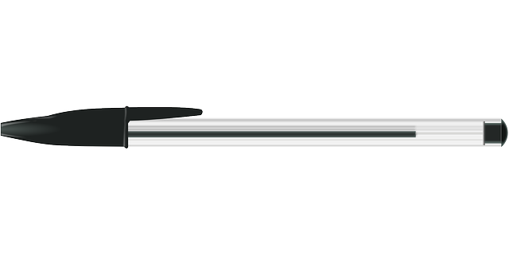
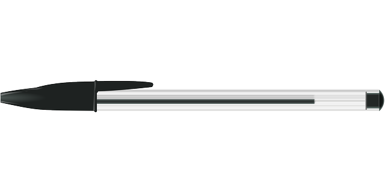

Caja de lapiceros BIC
Medida: caja c/12
Modelo:F290C-N
Clip:si, en tapa desprendible
Tipo de tinta:base de aceite
Color de tinta:negra
Tamaño de punto: 0.7 mm
Cantidad:12
Descripción
Société Bic es una compañía francesa con sede en Clichy. Fundada en 1945, es conocida por hacer productos desechables de bajo costo, entre ellos encendedores, bolígrafos y maquinillas de afeitar. El bolígrafo BIC, más concretamente el Bic Cristal, fue el primer producto de la compañía y hasta el día de hoy todavía sigue estando en uso y sinónimo del nombre BIC. Es el más usado por estudiantes y profesores, ello se debe a varios motivos, los principales son: precio económico, larga duración de la tinta, y que la tinta no traspasa el folio.regresar al inicio
Características
Su forma hexagonal se inspiró en la de los lápices de madera, con lo que se consigue
un empleo mínimo de plástico en su fabricación. Sumado a sus tres puntos de agarre,
el bolígrafo transmite una gran estabilidad en la escritura.
El cañón de poliestireno del bolígrafo muestra el nivel de tinta. Un pequeño agujero
en la barra exterior mantiene la misma presión de aire tanto dentro como fuera del
bolígrafo. La tinta es empujada hacia abajo por la gravedad del tubo, para surtir a la
bola situada en el interior de una punta de plata de níquel.
regresar al inicio
 alt="imagen" 
alt="imagen" 